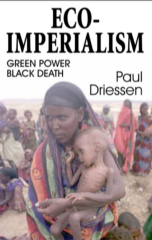

|
 |
|
HOME ISSUES OPPOSITION PROJECTS DEFENDERS WISE USE BOOKSTORE ARCHIVE |
A chilling new book by Paul Driessen
Ideas and ideologies have consequences. Horrid ideas and ideologies have lethal consequences. This is the central premise of Paul Driessens new book, Eco-Imperialism: Green Power Black Death. The notion that environmental theories and values should take precedence over the value of human lives has had lethal consequences for millions of people in less developed countries and the book documents these consequences in all their chilling detail.
The methods of present day eco-imperialists consist of numerous fronts from which they press their case invisibly behind the scenes of public policy. Following several intertwined doctrines of social and environmental radicalism, they impose these doctrines as the standard to which all companies, governments and individuals are to expected to conform. These doctrines are not factual evaluations, but projections of desired outcomes based upon nebulous concepts, abstract responsibilities, faulty scientific criteria and fraudulent business models.
What Paul Driessen documents in his book is that by fanatically seeking to impose their agenda upon the whole of society, especially in the developing world, eco-imperialists are directly responsible for advocating policies that literally result in the deaths of countless millions of poor and desperate people about the globe. Because these self appointed elites have a faulty understanding of business, capitalism, market economics, technology, global trade, and the value of profits, as they pertain to innovation and progress, their policies condemn those who would benefit by such advances to poverty, disease, starvation and death.
Imagine being forbidden all modern conveniences, from electricity to clean running water to pesticides to genetically modified foods all of which are commonplace in the developed world today. These and nearly all other forms of modern technology are precisely what eco-imperialists seek to prevent the worlds poor from acquiring, thus condemning them to the cruelest poverty, disease and premature death.
This book details the method that lies behind the eco-imperialist movement. The opening chapter reveals how extremist environmental groups demand that corporations adhere to a doctrine, called Corporate Social Responsibility, that places the social demands of these groups ahead of corporate goals and profits for shareholders. The end result is that, by being able to define what corporate responsibility is, they are able to define what are acceptable corporate policies, even when these policies result in human suffering and misery.
Using a new set of questionable ethical codes, eco-imperialists seek to impose their view of how the world should be according to these codes. Driessen reveals how the doctrines of stakeholder participation, sustainable development, the precautionary principle and socially responsible investing are used to supplant sound science and logic with pressure tactics, political expediency and a new form of tyranny.
Noting that in many cases these activist groups membership might be less than 0.01 percent of a communitys or countrys population, the author questions by what authority they act to prevent scientific, technological and economic advances, particularly in the desperately needy undeveloped and developing world. This is especially true when These self-appointed guardians of the public weal have little understanding of (and often harbor a deep distaste for) business, capitalism, market economies, technology, global trade, and the vital role of profits in generating innovation and progress.
The self-appointed elites who seek to implement this program of eco-imperialism hail almost unanimously from affluent, already developed nations. Most return to homes that already benefit from the very advances they oppose. Thus, when the book moves to the actual result of these policies in the poorest parts of the world, the malevolent nature of eco-imperialism is revealed in all its chilling detail. Examining different arenas chapter by chapter, Driessen exposes the lethal truth behind these policies.
No country can advance out of a Dark Ages level of poverty without electricity and other modern conveniences. As author Paul Driessens new book, Eco-Imperialism: Green Power Black Death, The Third Worlds poor increasingly want to trade their huts for modern homes, and enjoy running water, refrigeration, electrical lighting and other basic necessities taken for granted by westerners (and by intellectual and government elites in their own countries). Yet these are precisely the advances that radical environmentalists oppose.
Lacking electricity to heat their homes and cook their food, the worlds poor are condemned to gather wood and animal dung to burn for these purposes. Paradoxically, the destruction of forestland to provide wood for subsistence purposes does more damage to the environment in the long run than proposed dams to generate electricity would have. The Word Health Organization links health consequences of exposure to the severe indoor pollution resulting from burning such biomass fuels as wood and cow dung to some 4 million deaths of infants and children each year.
This scenario is repeated for each subject examined. The subject may be water purity, malaria, pesticide use, genetically modified foods or one of many others, but in each area the number of deaths attributable to the lack of scientific, technological and industrial advance is painstakingly documented. The millions of people who are slowly starving for want of insect resistant genetically modified foods, the millions of people dying of malaria because of opposition to carefully controlled DDT use, the millions of people dying due to water borne illness, represent just part of the death toll.
The junk science that underpins much of the eco-terrorists assumptions is also devastatingly refuted with documented facts and science. The fallacious reasoning that has led to global warming theories is carefully examined. The intentional falsification of many studies supporting global warming is also revealed. The manner in which scientific integrity is compromised to suit radical environmental goals is clearly exposed.
Radical environmental groups that are at the forefront of promoting eco-terrorism are Non-Governmental Organizations (NGOs) that wield great power and yet are accountable to no one. Corporations seek to appease these groups through donations and by lauding the activists cause, to earn their stamp of approval while continuing with business as usual. Those companies that do not endorse the program are ruthlessly castigated, even though their policies may in practice be more environmentally responsible.
This creates an unholy alliance between the NGOs and those corporations that seek their approval. It also promotes a dark web of interconnected relationships that undermine healthy economic competition in favor of garnering influence. Since eco-imperialists reject valid scientific research in favor of junk science, they easily throw their support behind corporations that give lip service to their cause, no matter what the facts are.
This book is replete with footnotes documenting original sources that support the text. It is essential background for anyone seeking to understand the nature of the ideological groups that are increasingly active in the world today. Ending on a positive note in the final chapters of the book, Driessen gives a number of constructive suggestions for how eco-imperialists can be weakened, and ultimately defeated. This is critical if we are to prevent the tens of millions of deaths a year that result from eco-radicals thwarting the introduction of proven advances of science and technology into the Third World.
The damage done by self-appointed, elites who bask in the fruits of technology and whose supposedly noble agendas deny those fruits to others, is a fearful sight. Eco-Imperialism reveals it starkly. The book is a must read for anyone involved or interested in health and environmental policy. For any such policy should follow the physician's axiom, First do no harm.
Imperialism: Green Power, Black Death, published by the Free Enterprise Press in Bellevue, WA. Purchase price, $15. For more information, please visit www.Eco-Imperialism.com
Don Newman, senior policy analyst for the Grassroot Institute of Hawaii, Hawaii's first and only free market public policy institute focused on individual freedom and liberty, can be reached at newmand001@hawaii.rr.com
{kind=link}